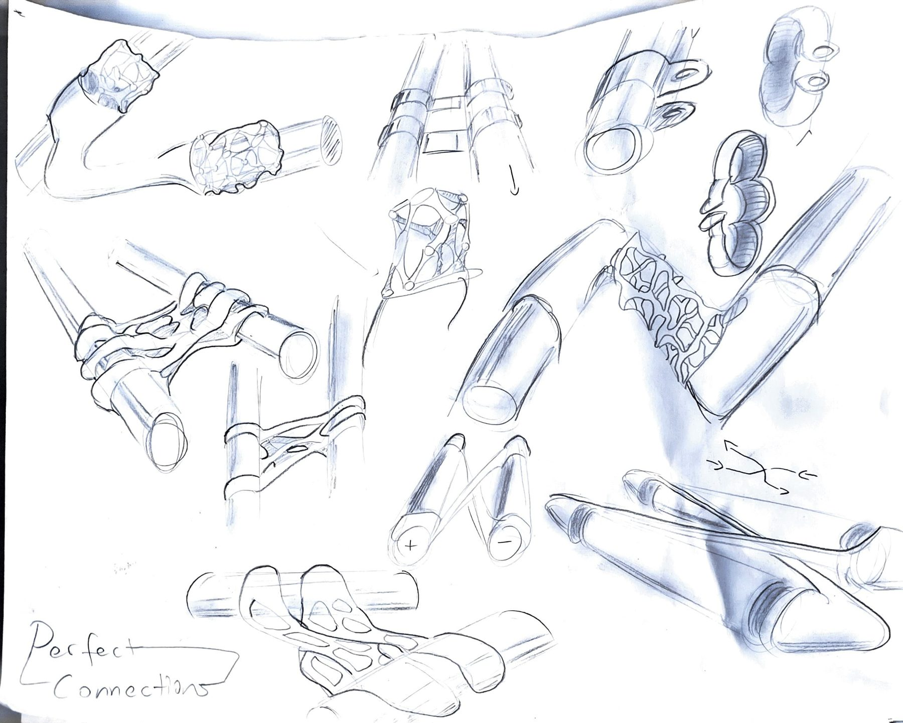
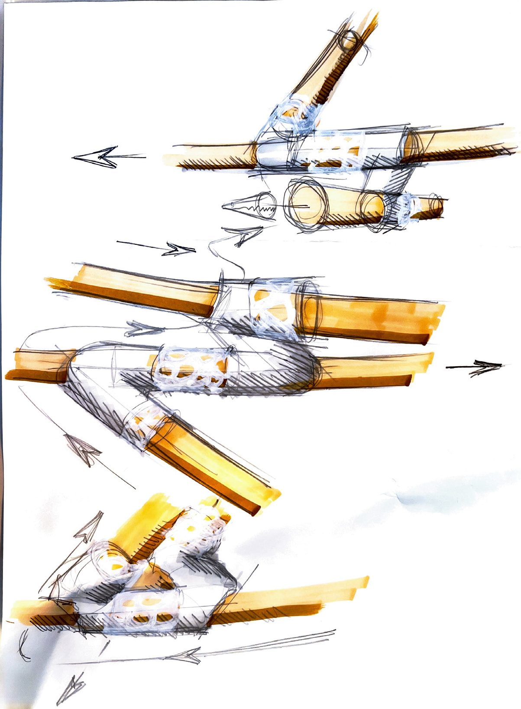
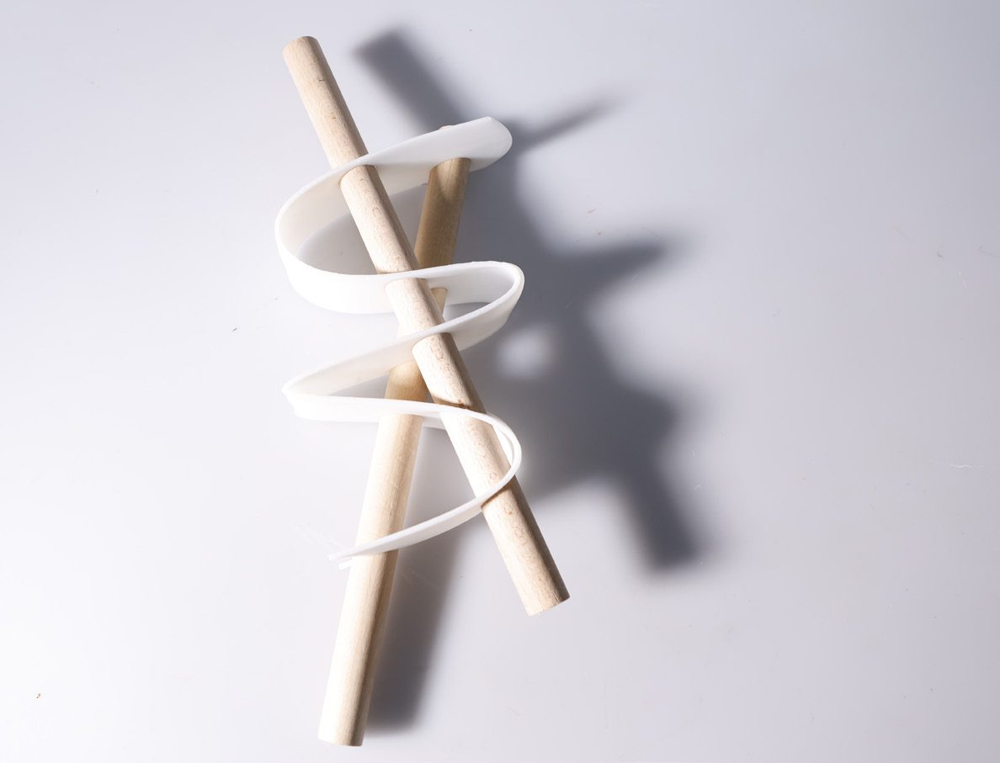
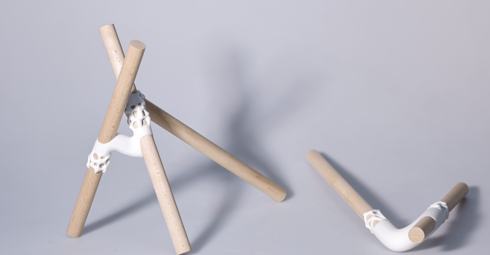
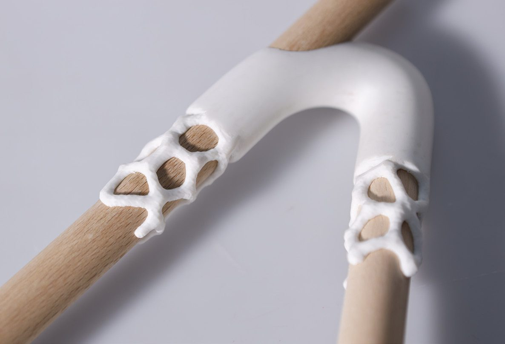
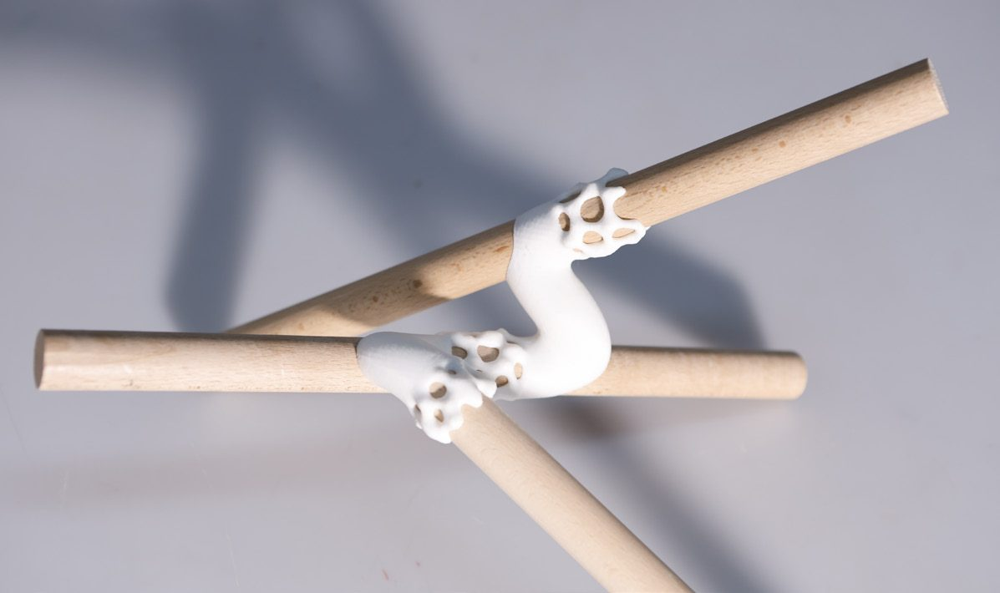
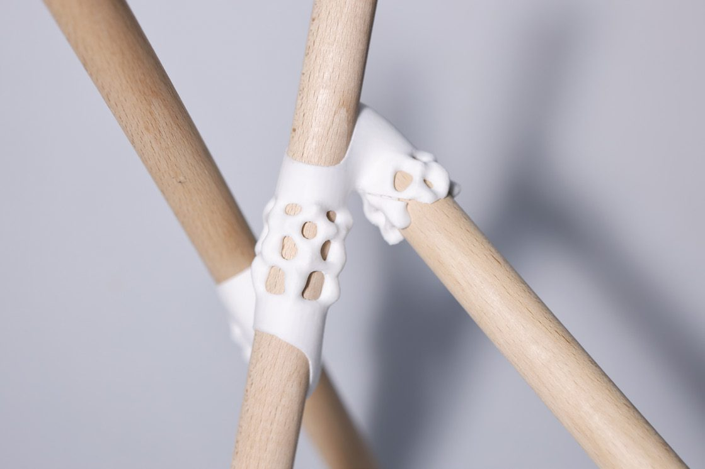
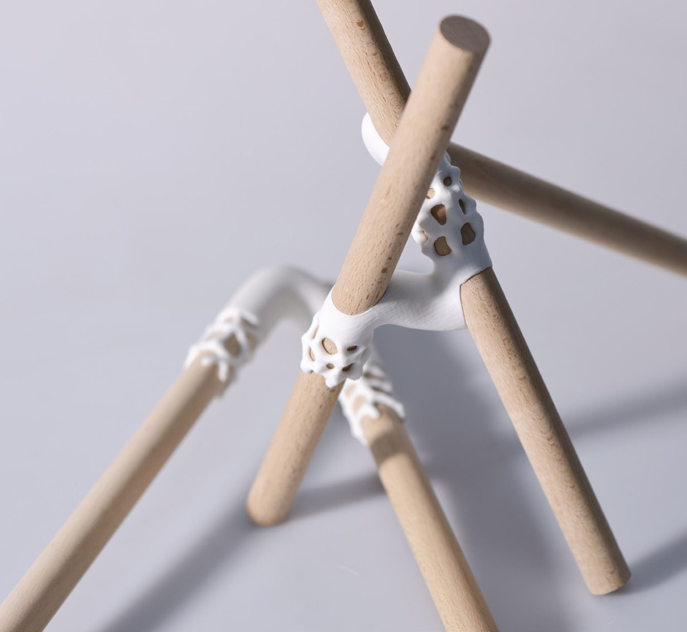

Result




09 / Form & process
A connector for beech dowels, generated in Grasshopper to wrap the dowels with only the material it needs. The result is an organic, grown-looking lattice, in versions for two and three dowels.







